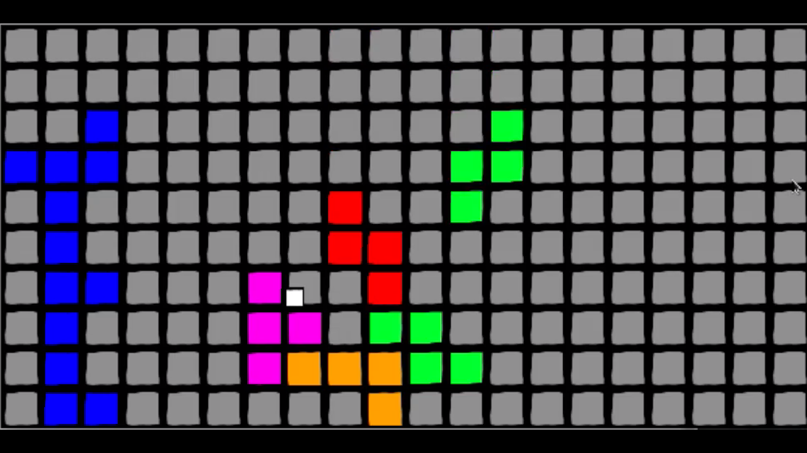

Survive Tetris is a 2D action game programmed in C++ using the SDL graphics library. Tetris pieces fall randomly from the top of the screen, and players try to escape from the level. Upon launching the game, players are given several options to customize their experience. They can set the width, height, and cell size of the game screen and also change the difficulty (game speed). The game is won when the player reaches the top of the screen and lost when the player is crushed by a Tetris block.

The Process
Our lead programmer had a concept in mind, and we immediately agreed on that concept when starting the project. We spent a long time discussing the best way to represent the Tetris board and pieces before we started programming. We based our game structure on the Model-View-Controller pattern we learned in object-oriented design. We first developed an initial grid and tetromino class, then implemented random block generation and collision. We created a custom Square class to improve performance and allow easy board scaling. For the final checkpoint, we successfully implemented player movement, win and lose conditions, and custom game settings.
My Contributions
I implented various bits and pieces of our game model over the course of the project, including parts of player movement and game logic. In some cases, I was writing methods in header files that would be implemented later, and in other cases I was implementing functions from header files. One of our three programmers worked entirely on the command line with no virtual machine, so it was up to me and the lead programmer to make sure the game rendered and played properly.